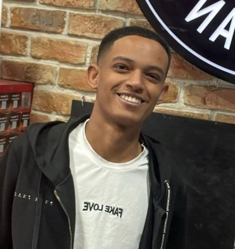

לזכרו של ימנו בנימין זלקה ז״ל
במקור, הסדנה הזו תוכננה לעסוק במעבר מתקופת המלחמה חזרה לשגרה.
בליל יום העצמאות האחרון — כאן בעיר שלנו — נדקר ימנו בנימין זלקה ז״ל, ונפטר מפצעיו יומיים אחר כך. החלטנו להקדיש את חלקו הראשון של המפגש לעיבוד האירוע הזה. מתוך ההקשר הזה נדבר בהמשך גם על בינה מלאכותית: כיצד היא יכולה להוות תשתית לתהליכים קבוצתיים.
הסדנה תתנהל כולה דרך הטלפון שלך, בקבוצות של 3-4. כל ההוראות יופיעו מסך אחרי מסך — אין צורך להתאמץ לעקוב. פשוט קראקראי את מה שכתוב ופעלופעלי לפיו.
שלום,
ברגע שכל המשתתפים/ות יירשמו, תקבלתקבלי את הקבוצה שלך.
עוד מעט מתחילים.
מצאו זה את זו/ה בחדר. קחו כוס שתייה, שבו יחד בפינה נעימה.
כשכולכם/ן מוכנים/ות, מישהו/י אחד/ת מכם/ן לוחצ/ת על הכפתור. כולכם/ן תתקדמו יחד לשלב הבא.

2004 — 2026
יהי זכרו ברוך
תנו לעצמכם/ן רגע בשקט. כשמוכנים/ות — ממשיכים. כל אחד/ת בקצב שלו/ה.
מי מוכן/ה להקריא? אחד/ת מחברי/ות הקבוצה יקריא/תקריא את הטקסט בקול לשאר הקבוצה. כשההקראה מסתיימת — לחצו "קראנו".
ימנו בנימין זלקה ז״ל היה בן 21.
הוא עבד בפיצרייה בפתח תקווה במשך חמש שנים — התחיל כשליח בגיל 16, ובשנים האחרונות היה אחראי משמרת.
בליל יום העצמאות האחרון, בתום משמרת, ביקש מקבוצת נערים להפסיק לרסס קצף בתוך הפיצרייה. הם המתינו לו בחוץ כשסיים את המשמרת ודקרו אותו. הוא נפטר מפציעותיו יומיים אחר כך בבית החולים בילינסון. מאות ליוו אותו למנוחות בבית העלמין ירקון.
"הוא היה ילד טוב וחייכן, חבר אמיתי שעוזר לכל מי שצריך. בחור שידע ואהב לעבוד, חיפש תמיד לתת מעצמו יותר."
— תמיר זילבר, מנהל הסניף שבו עבד
"הוא היה האדם המתוק והעדין ביותר, תמיד חייך, תמיד היה נדיב כלפי כולם. אמרתי לאחותו, שבועיים לפני, שהוא האדם היקר והאהוב עליי בעולם. הלב שלי נקרע לגזרים. אני מתחרט שלא הייתי שם להגן עליו."
— דוד, חבר קרוב של ימנו
"ילד טהור ותמים שידע רק טוב. כמשפחה אנחנו מרוסקים ושבורי לב."
— ממשפחתו של ימנו
"היה קהל גדול, צעקות, קבוצות של נערים שהקיפו מכל הכיוונים."
— יובל ספרלינג, עדת ראייה ברחוב
"זהו רגע של חשבון נפש. יש לנו חובה לפעול יחד כדי למנוע את המקרה הבא."
— רמי גרינברג, ראש עיריית פתח תקווה
לפני שנפתח שיחה, רגע פרטי.
כתובכתבי במשפט או שניים את התחושה שלך ברגע הזה. לא על האירוע — על איך אתה נכנסאת נכנסת למפגש הזה. המזג הפנימי שאיתו באתבאת.
הכתיבה אנונימית.
חברי/ות הקבוצה שלך לא יראו את זה, וזה לא יוקרן במליאה. תום יראה את כל המשפטים יחד, ללא שמות, וישלח אותם לסיכום רגשי של קבוצת המנהלים/ות כולה.
אלה רק דוגמאות — כתובכתבי מה שבאמת עולה בך.
סבבי שיתוף ושיח
לפני שמתחילים: שלושה סבבים לפנינו
בכל סבב ניכנס מזווית אחרת — כדי שתוכלו להתייחס לרובד המתאים בכל פעם:
מתחילים עם הלב.
השאלה:
איפה האירוע הזה נוגע בי — כאדם, לפני ובנוסף לתפקידי?
הצעה לנקודות התייחסות:
איך זה עובד?
סבבי שיתוף ושיח
עברנו דרך הלב. עכשיו הראש.
בחרו כל אחד/ת זווית שמדברת אליכם/ן. אין חובה שכולכם/ן תדברו על אותו דבר — להפך: אם כל אחד/ת ייכנס/תיכנס דרך זווית אחרת, הקבוצה תשמע תמונה עשירה יותר.
שש נקודות כניסה אפשריות — בחרו אחת שמהדהדת לכם/ן, או הביאו משלכם/ן:
איך זה עובד?
סבבי שיתוף ושיח
הלב הרגיש. הראש הבין. עכשיו הידיים.
השאלה:
לאיזו פעולה אני יוצא/ת מייד בבית הספר שלי?
"מייד" לא חייב להיות "מחר בבוקר", אבל כן בזמן הקרוב — לא בעוד חודשיים, לא "בתוכנית השנתית הבאה". השבוע הזה. החודש הזה.
הכיוון:
אם עדיין לא ברור לכם/ן מה בדיוק — זרקו רעיונות גולמיים. הסבב הזה יעזור לכם/ן לנסח. במסך הבא תכתבו את זה.
איך זה עובד?
הסבב נגמר. עכשיו — לשתף פרקטית. כל אחד/ת כותב/ת לעצמו/ה.
כתובכתבי טכני. מפורט. מעשי. ככל שתהיה ספציפישתהיי ספציפית יותר — כך זה בעל ערך רב יותר לקולגות שלך המתלבטים/ות מה לצאת לעשות.
כאן נגמר החלק הקבוצתי. חזרו למליאה. תום מחכה לכם/ן שם.
בזמן שכולם/ן מתאספים/ות — רגע אחד לפני שמתחילים את החלק השני.
כתובכתבי כמה מילים על החוויה עצמה של השימוש בטכנולוגיה. לא על התוכן (זה נשאר בקבוצה) אלא על החוויה:
מה שתכתובשתכתבי כאן יהיה הבסיס לחלק השני של המפגש: איך בונים מערכות כאלה, איך נכון להשתמש בבינה מלאכותית להנחיית תהליכים קבוצתיים.